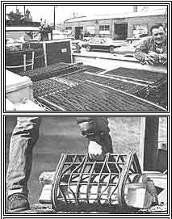

FAR ABOVE: Using worn-out end discarded tire casings, Ken Winans weaves these attractive /and profitable!) floor mats. ABOVE: This recycled tire wood-carrier?which is just one of the enterprising peddler's products?is both sturdy and easy to handle.